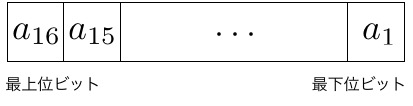
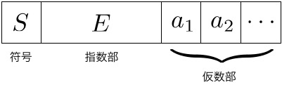

計算機の中で数はどのように表現されているかを学ぶことで、計算アルゴリズムから生ずる誤差について学ぶ。
例えば、整数の計算機の中での16ビットを使った表現は次のようになっている。
 \begin{equation} x = \sum_{i=1}^{16} a_i \times 2^{i-1} \end{equation}ただし、負数との区別のために、$a_{16}=0$が条件。つまり、$x \le (2^{15} -1)$までしか正しく表現できない。
負数$x$は$(2^{16}-|x|)\ (\ge 0)$の正数として表現。これを2 の補数と呼ぶ。すると$a_{16}=1$。正数$a$と負数$b$（2の補数）の足し算を行う際に、正数の足し算回路を使うと、 \begin{equation} a + b \to a + (2^{16}-|b|) \to 2^{16} + (a+b) \end{equation} 最後は17ビット目を無視すると正しい解になっている。従って、正数と負数を区別する必要はなくなる。
このようにして、16ビットの場合、表現できる正負数の範囲は$[-2^{15}, 2^{15}-1]$となる。 なお、演算の結果、範囲を超える場合で、上限を超える場合を「あふれ」、又は、「オーバーフロー」と呼ぶ。下限を超えることを「アンダーフロー」と呼ぶ。
一般に浮動小数点として表現されている： $ x = F \times b^E$。$F$を指数部、$E$を仮数部、$b$を基数。 具体的には、基数$b=2$とし、 \begin{equation} x = (-1)^S \times(1.a_1a_2\cdots)_2\times2^{E-127} \end{equation} ここで、$S, a_i$はビットを表し、$(1.a_1a_2\cdots)_2$は、 固定小数点の2進数表現で$1+\sum_i 2^{-i} a_i$を表す。
IEEE754規格では、単精度では、指数部は8ビット、仮数部は23ビット。 倍精度では、指数部は11ビット、仮数部は52ビット。 指数部と仮数部が有限ビットなので、演算の結果、指数部にあふれが生じたり、 演算の精度に気をつける必要がある。
数値計算には誤差はつきものである。代表的な誤差の呼び方には次のものがある。ただし、以下では、$a$を真値、$x$を近似値とする。
誤差を評価する際に、1に足しても浮動小数点の精度では数値が変化しないマシンイプシロン$\epsilon$を基準にすることもある：$1 + \epsilon = 1$
有限項で近似した時に生ずる誤差。 例：$\sin x \approx x - \frac{x^3}{3!} + \frac{x^5}{5!}$
有限桁で表すために四捨五入時に生ずる誤差。例えば、引き算により、精度が失われる現象を桁落ちと呼ぶ。
大きな数と小さな数を含む計算を行うと精度が有限であるため、大きな誤差が生ずる可能性がある。
例： 精度が4桁の場合、 \begin{equation} (123.4 + 0.01234) - 123.4 = 123.4 - 123.4 = 0 \end{equation} \begin{equation} 123.4 - 123.5 = 0.1000 \end{equation}
例： $a x^2 + bx + c = 0$の解を、$x = \frac{-b}{2a} \pm \sqrt{\left(\frac{-b}{a}\right)^2 - \frac{c}{a}}$で 計算することを考える。平方根の中の式を$A$とした時、$a=9, b = -24, c=16$の場合、$A$の真値は0であるが、 丸め誤差により、 \begin{equation} A = \left(\frac{24}{18}\right)^2 - \frac{16}{9} = 1.333^2 - 1.778 = 1.777 - 1.778 = -0.001 \end{equation}
誤差は計算と共に例えば以下のように伝搬していく。
\begin{eqnarray} x &=& \mbox{真値} x_a + \mbox{誤差} e_x, \quad y = \mbox{真値} y_a + \mbox{誤差} e_y\\ x+y &=& (x_a + y_a) + (E_x + E_y)\\ x-y &=& (x_a - y_a) + (E_x - E_y)\\ xy &\approx& x_a y_a + x_a E_y + y_a E_x\\ \frac{x}{y} &\approx& \frac{x_a}{y_a} ( 1 + \frac{E_x}{x_a} - \frac{E_y}{y_a}) \end{eqnarray}ただし、誤差の2乗は無視した。
従って、四則演算のたびに誤差は累積されていくことがあり、計算アルゴリズムは常にこのことに注意する必要がある。
実数の表現方法として、倍精度（仮数部52ビット）を用いる場合を考える。
(1) 有効精度は10進数では何桁かを評価せよ。
(2) 10進数で$0.1 = (0.1)_{10}$を倍精度に変換した際の誤差を評価せよ。
(3) マシンイプシロン$\epsilon$を示せ。
(4) 2次方程式$x^2 + ax + b = 0$の解を、解の公式$x = \frac{-a \pm \sqrt{a^2 - 4b}}{2}$で計算する場合、 桁落ちが起きる例を示せ。
(5) 前問の桁落ちを回避する計算方法を示し、精度を比較せよ。